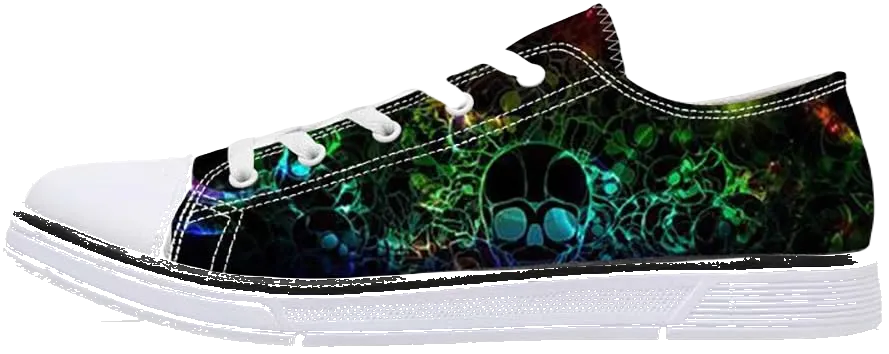
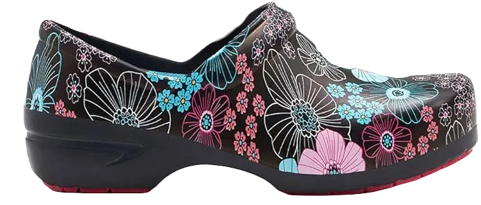
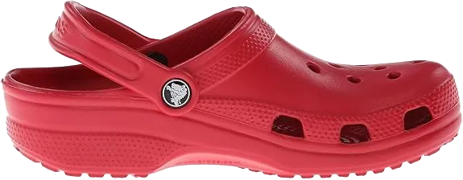

8 Best Work Boots for Pouring Concrete in 2024
When pouring concrete, standing for long periods can be a challenging task for professionals such as contractors, shop workers, or healthcare attendants. The pressure of remaining on your feet all day can become burdensome without the right support. Wearing footwear that lacks proper support can lead to discomfort and fatigue.
However, if you choose shoes that provide adequate support and cushioning for your feet, you can significantly reduce the discomfort associated with long hours of standing. Investing in work boots designed for flat feet will help you avoid many of the issues mentioned earlier, ensuring you remain comfortable and focused on your tasks.
-
#1
Sketchers Glides Calculous Slip-On loafer
.webp)
First up is the Glides Calculous by Skechers. These slip-on loafers are perfect for jobs that involve a lot of standing or walking. They offer a good balance of comfort, support, and a touch of style, making them suitable for various work environments.
The insole features gel-infused cushioning, which is particularly beneficial for those who spend their day walking on concrete or standing on hard surfaces. Since they are slip-ons, they are easy to put on and take off, adding to their convenience during busy workdays.
The upper part is made of smooth oiled leather, showcasing stylish stitching and a mock-toe design. Many workers, especially in the construction industry, appreciate these shoes for their comfort and durability. This makes them a popular choice among professionals who need reliable footwear for pouring concrete and other demanding tasks. -
#2
Paisley Sneaker
Next up are the strong, comfortable, flexible, and agreeable Paisley shoes designed by Dansko. These lace-up sneakers feature a 100% leather upper, making them durable and easy to maintain, even under heavy use.
The shoes come with a removable triple-density footbed that offers mild arch support, helping to keep your feet comfortable during long hours of standing or walking. They also incorporate DuPont Sorona fiber for excellent moisture management, ensuring your feet stay cool and dry throughout the day.
The design of these shoes prioritizes comfort without limiting your range of motion. The collar around the ankle area is both flexible and supportive, providing a snug fit. When you wear the Paisley shoes, they offer a sock-like feel that makes you reluctant to take them off. Additionally, the Paisley is available in both regular and wide sizes, accommodating nearly all foot types. -
#3
Dr. Solace Stallion casual shoes
.webp)
The Stallion’s by Dr. Scholl’s is designed as a lightweight, slip-on dress shoe suitable for nearly any occasion. If you’re seeking footwear that accommodates specific foot conditions like bunions, edema, or neuropathy, the Stallion’s is crafted to address those issues effectively.
While specifically made for individuals with particular needs, these shoes are also excellent for people from various work backgrounds, especially for those who spend all day on concrete. The tongue and ankle areas feature additional cushioning, ensuring a snug fit while preventing any discomfort or irritation that can arise during long work shifts.
From a comfort standpoint, these shoes are highly suitable, with no noticeable flaws. However, one potential drawback is that this shoe style may not fit well with everyone's preferences or workplace aesthetics, as some may prefer not to stand out with a distinctly different shoe design. Despite this, they remain one of the best choices for men who need to be on their feet all day. -
#4
Nurse buddies pace
Our penultimate women’s shoe is the Nurse Buddy’s Pace, specifically designed for nurses who spend long hours on their feet, whether standing on hard floors or moving around to meet the needs of patients and healthcare professionals throughout the day.
The Nurse Buddy’s Pace features a full-grain leather upper and a polyurethane rubber outsole, ensuring maximum durability and comfort. The lace-up design is flexible and stretchy, accommodating various instep heights. Inside, there’s a stabilizing composite shank that helps correct posture and keeps you in a natural stride cycle, complemented by a built-in corrective orthotic for added support.
These shoes come in a variety of aesthetically pleasing designs and multiple color options, allowing you to express your style beyond the typical medical scrubs. Overall, the Nurse Buddy’s Pace combines functionality with style, making them an excellent choice for healthcare professionals. -
#5
Reebok concrete work Shoe
.webp)
Our final recommendation for quality shoes designed for walking on concrete for our male audience is the Reebok Work n’ Cushion 3.0. These shoes are ideal for anyone who spends a significant amount of time walking or standing on hard surfaces, whether in a casual or professional setting.
The footwear offers excellent value for your money, featuring a combination of leather and synthetic upper materials along with a durable rubber sole. The low-profile design incorporates DMX Ride technology and beveled heel construction, both of which not only provide a high level of stability but also enhance comfort and shock absorption when impacting hard surfaces.
The outsole is oil- and slip-resistant, ensuring you can confidently navigate various environments without worry. Additionally, these shoes come in wide sizes, making them a great option if you need more room for a comfortable fit. Overall, the Reebok Work n’ Cushion 3.0 delivers durability, support, and comfort for those on their feet all day. -
#6
AVIA Trivet Carrier Shoe
.webp)
The final shoe on our list is the Trivet by AVIA. This shoe is constructed from a 100% synthetic upper and features an engineered outsole. The engineered leather upper is treated with Scotchgard for enhanced water resistance and stain protection.
Inside, the shoe is equipped with an EVA midsole and a soft gel heel unit, combined with a cantilever support system for exceptional cushioning and shock absorption on hard surfaces. The Trivet also includes a molded, removable EVA insole designed to wick away sweat and prevent odor buildup, ensuring long-lasting freshness throughout the day.
The outsole is oil- and slip-resistant, featuring rubber treads for improved traction on various surfaces, even in slippery or smooth conditions. These shoes are particularly ideal for warehouse workers who need to stay on their feet and in constant motion. -
#7
ASICS Gel-undertaking 6
.webp)
Next up is the Gel-Venture 6 by ASICS. These lightweight shoes feature breathable mesh panels throughout, along with a cushioned tongue, collar, and removable insole. The mesh upper includes engineered overlays that ensure your feet remain comfortable and supported, even when standing on hard surfaces all day. Additionally, the upper is highly ventilated to keep your feet cool and dry.
As mentioned earlier, the foam insoles are removable, which is a fantastic feature if you want to take your foot health to the next level with custom orthotics. This is beneficial for those who may require specific treatment for foot conditions or simply prefer a more personalized fit for long-term comfort.
However, if custom insoles aren’t your preference, the stock insoles provide ample cushioning in the forefoot and heel areas, enhancing overall comfort with every step. The Gel-Venture 6 is designed to accommodate various needs, making it a versatile option for anyone on their feet for extended periods. -
#8
Algerian classic Clog
Algerian has opted for a clog design for their classic shoe, as many believe that clogs provide the best comfort during a busy day. These stylish and sophisticated shoes are perfect for women in any profession, particularly those who are constantly on the move or standing for long periods on hard surfaces.
The traditional clogs feature a moderate 1.75" heel that is both stain- and slip-resistant, offering additional support and stability when navigating various environments. They also have a breathable leather lining and a PU sole designed to reduce the strain of walking on hard concrete while providing moderate shock absorption.
Additionally, the collar is equipped with extra cushioning for enhanced comfort and to minimize chafing during movement. Overall, these clogs combine functionality with elegance, making them a practical choice for busy professionals.